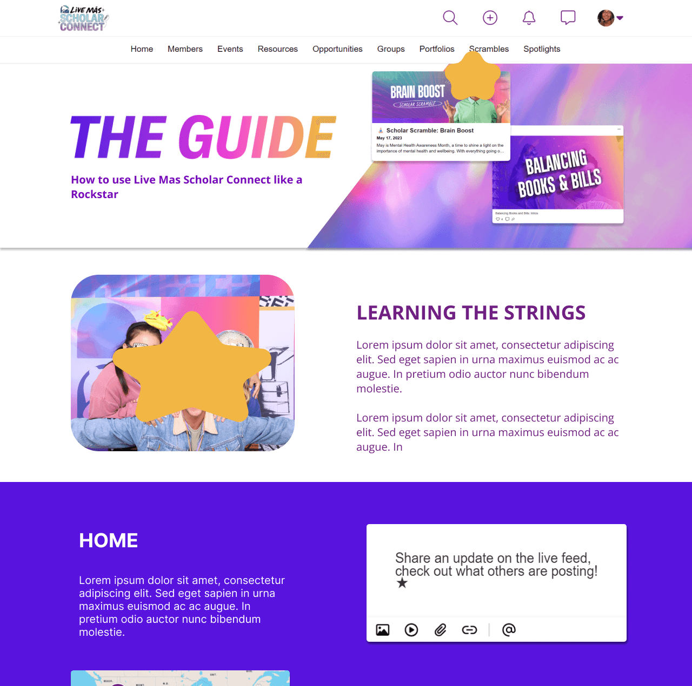

CoLabl
Graphic and Digital Design Intern, Apr.2024 - May.2024
The Taco Bell Foundation has a unique app designed for winners of the Live Mas Scholarship. I am part of this community and had the opportunity to propose designs that would be used for the app Live Mas Scholar Connect(LMSC). Imagery with names of real people have been redacted.
Scroll over images :)


Appstore Screenshots
The task was to modernize the screenshots that would be placed in the app's page.
- The thought process was to heavily use the assets provided, such as the gradients, and sparkle vectors
- Next, I entered the app and fetched the screenshots that displayed core functionalities, and I created phone mockups
- While this design was not chosen as the one to move forward, elements were used in the final product - such as my layouts

Webpage Redesign
When users enter the app/webapp, the Guide page is the first thing they see, and the task was to moderize it as well.
- This was my first iteration. Admittedly, the laptop I used to design did not have a great display, and the colors came out different than expected, notably the contrast
- Once again, any gradients that were provided were used in this proposal, but I wanted the design to breathe, so it was mostly white, with the gradients supporting
- Out of the 4 interns I was working with, my design was selected to move forward, with some edits


The Guide - Final Version
This is the version that was turned in and coded in
- This was my first time designing something that was handed over to other devs, and I had to change some of my original ideas due to resources
- I opted to make some sections full-width, and solid-colored, to ensure enough contrast with text
- I also listened to suggestions to include more photography of the scholars themselves, and I believe this made for a large improvement